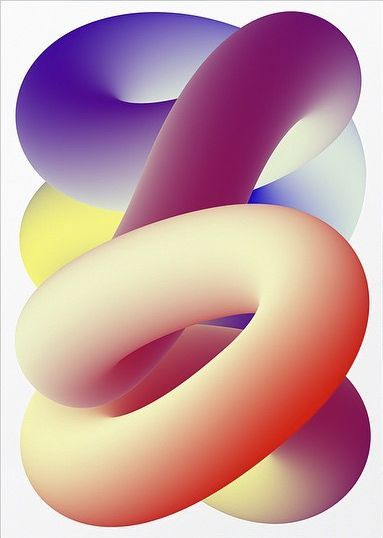
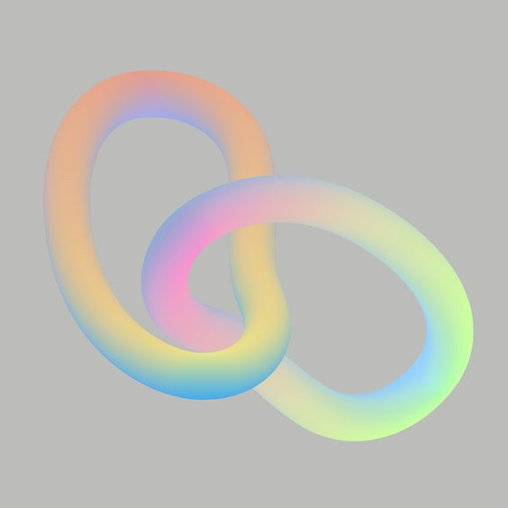

A05: READY PLAYER MESH!
(LAMP PROGRESS TEMPORARILY AT THE END OF THIS ARTICLE)
Combining meshes for 3D printing can be a challenging effort, especially if found elsewhere and trying to re-adapt them. This study uses a custom-made 3D avatar, blends it with several meshes inside of Rhino, and prints it in 3D as a healthy STL!
-- OBJECTIVE --
For this purpose, I wanted to personalize the study. I created a mesh avatar in ReadyPlayerMe. I customized all designelements the way I wanted them and imported the mesh into Rhino.
For the second set of meshes, I chose my first study in 3D Printing, a box frame. I wanted to create the illusion that the avatar is inside the box.
-- BOOLEAN MESS MESH! --
While this is a pretty straightoforward task, the biggest hurdle was preparing the ReadyPlayerMe Avatar for boolean operations. It is not a solid, feet, pants, sweater, hands, head, and even hair, are opened meshes. I spent a good amount of time extending geometry and drawing triangles.
The most useful method I followed was this:
1. Convert all meshes to NURBS.
2. Extend the polysurfaces naked edges until they are ALL inside another joining polysurface.
3. Split both polysurfaces using each other as splitting shape.
4. Join polysurfaces ignoring cut-off pieces (the surfaces that remained inside of the splitting polysurface)
The hardest part to modify was the shoe, since it had a ton of non-manifold edges and intrinsic shapes. But I managed to cap the hole on top in order for the leg to intersect nicely and be able to merge them.
The biggest problem was the head and hair. They were composed of too many opened meshes that was impossible to join together. I gave up trying to fix it, and proceeded to smooth the surface in different iterations, first back to mesh, then to quad, then quad remesh in multiple occasions until a good balance was achieved.
-- DESIGN.ME--
Not being able to work with the hair brought an interesting constraint. I decided to hide the character inside a box full of balloons. Akin to a grown up throwing himself inside the plastic balls at the supermarket!
-- 3DPRINT.ME --
I wanted to ensure I could slice this with CURA and 3D print it. But I realized the shape was too complicated, with many overhangs and interior zones. I had to add a few more balls to fake the bridging distance between one side and the other.
I finally went through the process of boolean-joining everything, which was very fast thanks to the Avatar being a solid, including my frame and the regular Rhino spheres.
In order to save some material, I had to offset the surface of all the balls a bit and use it as empty space inside the model.
Here we can see the mesh without the intersections inside, I have no torso or head anymore, and there is a big empty space in the middle. I also had to cut the spheres overlapping with the floor for this to print straight as a standing element.
-- FINAL RESULT --
I wanted this to print 30 cm tall. But CURA said it would finish around christmas. So I did a minuature that ended up working perfectly upside down or standing! Pretty happy with the result.
Source Files:
A06: LAMP PROGRESS!
For my 3D printed lamp, I am using a Raspberry Pi running HomeBridge to control an addressable LED strip. I am doing a modern take to the traditional haloguen lamps, using as main inspiration these graphic design reference:

-- LIGHT SOURCE --
I got an RGB 5050SMD addressable led strip with approximately 1 cm. of width.

-- FIRST TEST --
The biggest challenge in the creation of the lamp is ensuring a consistent diffusion of the light. Each LED is separated by a fixed distance, if the 3D printed enclosure is too close to the surface of the LEDs, or doesnt have the appropiate thickness to diffuse the light, it will be too noticeable and not to pleasant to look at.

I am using transparent PETG filament. I 3D printed this enclosure, however, I quickly learned that the infill structure was a bit too noticeable to the exterior. I am looking for a truly diffusive look and this did not give the results I wanted.

Furthermore, printing this shape for a few loops would take 5 to 6 days to print. Which leave a very narrow margin of error if something goes wrong.
-- SECOND TEST --
For the second test, I narrowed the thickness of the tube. I also did solid walls, with 6 layers. However, even when using that high amount of walls, it did not diffuse the light the right way.

And it continues from here!